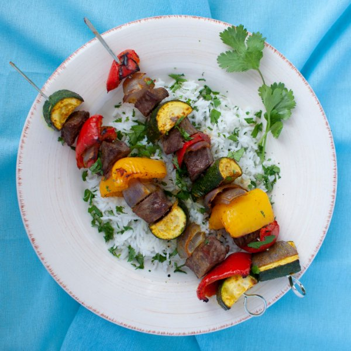

Charbroiled Beef Kebabs with Curried Vegetables & Basmati Rice

Nutrition (per serving)
689.3 kcalCalories
43.8 gProtein
64.6 gCarbs
28.8 gFat
Full nutrition table
| Calories | 689.3 kcal |
| Total fat | 28.8 g |
| Saturated fat | 10.6 g |
| Trans fat | 1.4 g |
| Cholesterol | 103.8 mg |
| Sodium | 101.8 mg |
| Carbohydrates | 64.6 g |
| Fiber | 5.5 g |
| Sugars | 9.5 g |
| Protein | 43.8 g |
| Potassium | 1153.3 mg |
| Calcium | 104 mg |
| Iron | 7.9 mg |
| Vitamin A | 431.4 IU |
| Vitamin C | 210.4 mg |
| Vitamin D | 6.8 IU |
Cookware
Ingredients
- 1 ⅓ cupsbasmati rice
- 1 small bunchcilantro
- 2red bell peppers
- 1 mediumred onion
- 1 ½ lbstriploin (New York strip) steak
- 2yellow bell peppers
- 2 mediumzucchini squash
- black pepper
- curry powder
- extra virgin olive oil
- salt
Steps
- Using a strainer or colander, rinse the rice under cold, running water, then drain and transfer to a small saucepan. Season the rice with salt, add water and bring to a boil over high heat.1 ⅓ cups basmati rice
2 ⅔ cup water
½ tsp salt - Wash and dry the fresh produce.2 medium zucchini squash
2 red bell peppers
2 yellow bell peppers
1 small bunch cilantro - Preheat oven to broil and position rack under the broiler.
- Season steak with salt and pepper and cut into 1 inch cubes.1 ½ lb striploin (New York strip) steak
½ tsp salt
½ tsp black pepper - Once the liquid with the rice comes to a boil, stir the mixture, cover the saucepan, and reduce the heat to low. Cook the rice until the liquid is fully absorbed, 15-18 minutes. Once done, remove the rice from the heat and let it stand, still covered, for 5 minutes.
- Peel the onion, cut it into quarters and separate it into slices; place in a medium bowl.1 medium red onion
- Trim off the ends of the zucchinis then cut in half lengthwise; Cut into 2 inch pieces and add to the bowl with the onion.
- Cut peppers into quarters, remove seeds and membranes; cut in half crosswise and add to bowl with zucchini and onion.
- Add oil, curry powder, pepper and salt to the bowl with the veggies, toss to coat.4 tsp extra virgin olive oil
4 tsp curry powder
½ tsp salt
½ tsp black pepper - Thread beef, onion, squash and peppers onto skewers and place onto the broiler pan. If you don't have skewers, spread veggies and steak on the broiler pan.
- Broil in preheated oven, turning every 3 minutes, until done, about 12 minutes. If you aren't using skewers simply toss the vegetables and beef every 3 minutes.
- Shave the cilantro leaves off the stems; discard the stems and mince the leaves.
- Uncover the rice and fluff with a fork; gently fold in minced cilantro, reserving 2 tbsp for garnish.
- To serve, divide rice and skewers between plates and garnish with reserved cilantro. Enjoy!